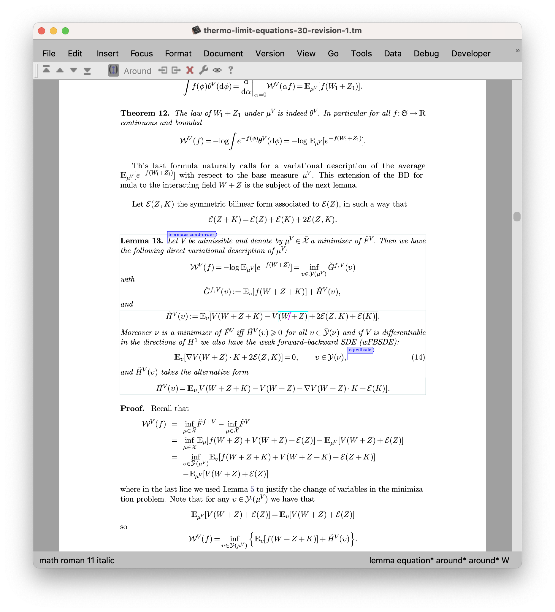
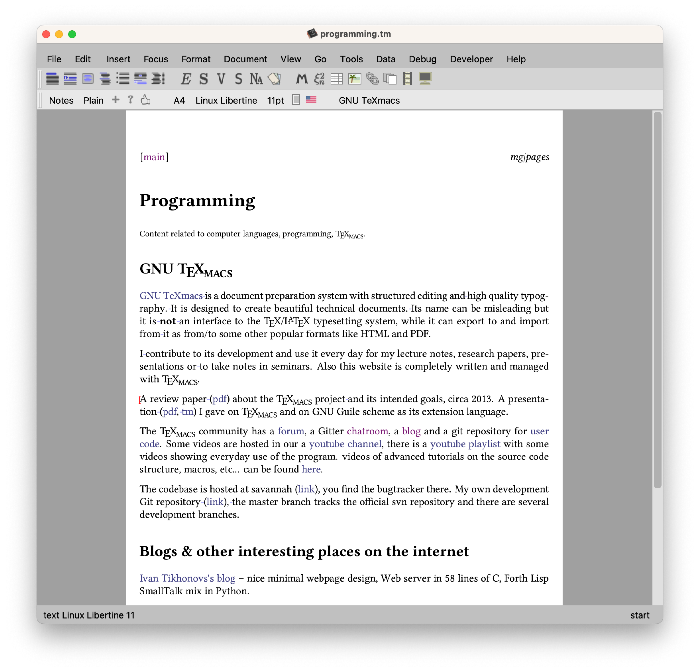

[main]mg|pages
There are only two hard things in Computer Science: cache invalidation and naming things.
GNU TeXmacs is a document preparation system with structured editing and high quality typography. It is designed to create beautiful technical documents. Its name can be misleading but it is not an interface to the TeX/LaTeX typesetting system, while it can export to and import from it as from/to some other popular formats like HTML and PDF.


I contribute to its development and use it every day for my lecture notes, research papers, presentations or to take notes in seminars. Also this website is completely written and managed with TeXmacs.
I have also created and maintain several related community projects, including Notes on TeXmacs, a blog about TeXmacs, and tm-forge, a repository of user-contributed documents, styles, plugins and examples.
A review paper (pdf) about the TeXmacs project and its intended goals, circa 2013. A presentation (pdf, tm) I gave on TeXmacs and on GNU Guile scheme as its extension language.
The TeXmacs community has a forum, a Gitter chatroom and a youtube channel, there is a youtube playlist with some videos showing everyday use of the program. videos of advanced tutorials on the source code structure, macros, etc… can be found here.
The codebase is hosted at savannah (link), you find the bugtracker there. My own development Git repository (link), the svn_sync branch tracks the official SVN repository and there are several development branches.
My current development work comes together in TeXmacs Upsilon, an experimental version of GNU TeXmacs combining new features with the upstream code. It supersedes the earlier TeXmacs Vue project; Vue continues as one of its graphical interfaces, alongside Qt and the native Cocoa interface for macOS.
Upsilon brings OpenType mathematics, faster Scheme interpreters, incremental typesetting, Git integration, Zotero and CSL bibliographies, code editing with tree-sitter and language servers, and AI sessions. The same codebase also runs in the browser through WebAssembly.
The project website offers experimental builds for macOS, Linux and Windows, a browser application, a feature tour and recent changes. These are continuously tested development builds. The sources are on upsilon_texmacs; problems can be reported in the project issue tracker.
TeXmacs Upsilon: OpenType mathematics in Libertinus Math, using the Vue interface. More screenshots.
As of October 2026, the following lines of work are integrated in Upsilon. Most retain separate branches so that they can be developed and proposed upstream independently.
Interfaces and icons: native Cocoa and Vue interfaces, GPU rendering, themes and icon sets.
OpenType mathematics, additional fonts and font design: mathematical font layout, matching text families and font selection.
s7 and femtolisp: alternative Scheme runtimes, with s7 now the default in Upsilon.
Git integration: document history, revision comparisons and structured three-way merges.
Zotero and CSL: live reference libraries, citation completion and bibliography styles.
Markdown and office converters: import and export for Markdown, Word and OpenDocument.
Program code: tree-sitter syntax analysis and language-server support in source files and code blocks within documents.
AI sessions: conversations with local and hosted models inside a document.
WebAssembly port: editing, PDF export and in-browser computational plug-ins. Development now takes place directly in Upsilon; the old browser branch is retired.
Fixes, performance and tests: incremental typesetting, conversion and editing fixes, and regression testing across platforms.
The open-work list tracks remaining tasks, including renderer and PDF-export consistency, CSL edge cases and testing across interfaces and platforms.
A related experiment is Vau: extracting a minimal TeXmacs typesetting core for reading and rendering documents, while exploring possible refactorings.
Clay: a small, renderer-independent C library for responsive UI layout, with WebAssembly support.
s7-imgui: an experiment in integrating the s7 Scheme interpreter with an immediate-mode graphical interface.
The Machinery UI articles: practical notes on immediate-mode GUI architecture, drag and drop, event dispatch, rendering and Emscripten.
Text layout is a loose hierarchy of segmentation and Raph Levien's blog: thoughtful material on text layout, fonts and graphics.
Blend2D and Sokol: compact building blocks for two-dimensional rendering and cross-platform graphics.
Decker: a modern, scriptable environment inspired by HyperCard, and an example of documents used as interfaces.
rxi's blog contains very interesting minimal design ideas for user interfaces, including the lite editor; rxi also developed the tiny microui immediate-mode UI library.
msdf-atlas-gen: a generator for GPU-friendly multi-channel signed-distance-field font atlases.
Lisp in Small Pieces on modern Schemes: source programs from Christian Queinnec's book, updated for modern versions of Bigloo, MIT Scheme and Guile.
femtolisp: a compact, fast and self-contained Scheme-like Lisp with a small core, bytecode compiler and virtual machine.
META II: a Scheme implementation of the META II compiler-writing language, together with an assembler and bytecode interpreter.
s7 Scheme: a small embeddable Scheme interpreter designed for extending and scripting larger programs.
Maru: Ian Piumarta's experimental Lisp implementation, including parsing-expression grammar and compiler experiments.
Ivan Tikhonov's blog: notes on minimal software and web design, including tiny C programs and experiments mixing Forth, Lisp, Smalltalk and Python.
Felix Breuer's blog: essays and projects at the intersection of mathematics, computation and visual explanation.
Ian Piumarta's software projects: a collection of small language implementations, virtual machines and experiments in extensible systems.
Matthew Butterick's Practical Typography: a clear reference on type composition, fonts and page layout, including typography for the web.
Nicolas P. Rougier's website: research and teaching resources on scientific computing, visualization and reproducible research.
Build Your Own Lisp: a step-by-step introduction to C, parsing and interpreters through the construction of a small Lisp.
Daniel Holden's website: technical articles on numerical methods, graphics, animation, machine learning and game development.
Peter Norvig's website: essays, notebooks and code on artificial intelligence, algorithms, programming languages and software design.
Uxn ecosystem: Hundred Rabbits' ecosystem for portable tools and graphical applications built around a small virtual machine.
Oleg Kiselyov's homepage: articles, tutorials and code on functional programming, types, continuations and staged computation.
GNU Guix: a package manager and GNU/Linux system with declarative configuration and reproducible software environments.
Nix and NixOS: a package manager and Linux distribution for declarative system configuration and reproducible development environments.